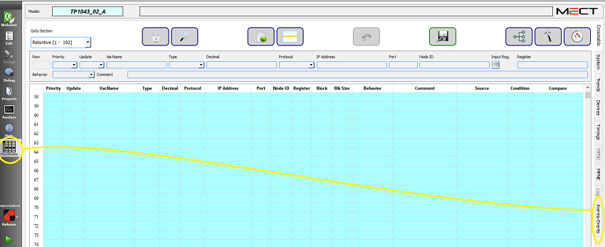
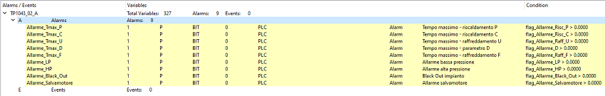

Auf der Registerkarte "Alarms-Events" können Sie alle Alarme und Ereignisse Variablen anzeigen.

Die Schnittstelle ist wie folgt:

Dieser Bildschirm zeigt alle Informationen der als Alarme und Ereignisse definierten Variablen.
Die Tabelle befindet sich im READ-ONLY-Modus. Durch Anklicken der gewünschten Variable gelangen Sie direkt in den Crosstable-Editor, wo Sie die Daten ändern können.